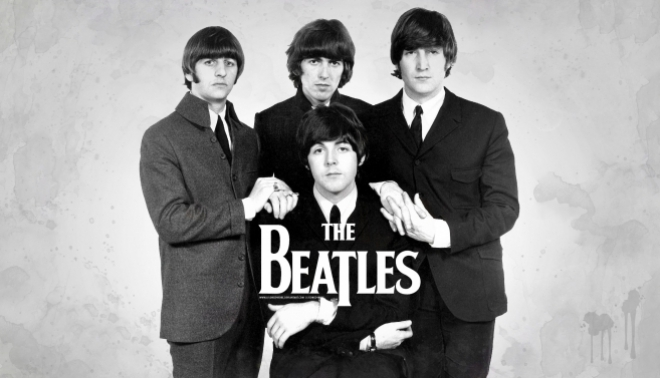

The Beatles
A banda criada em 1957, inicialmente foi formada por John Lennon e seus colegas de escola, Peter Sholton, Erick Griffths, Bill Smith e Rod Davis. Em homenagem a escola Quarry Bank School, a banda recebeu o nome de The Quarrymen. Ainda em 1957, Paul McCartney foi convidado a integrar a banda.
